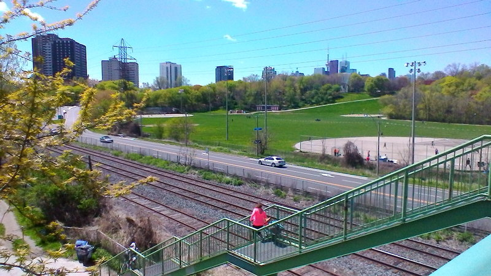

Today’s walk comes in two parts, with a pause for lunch between. Part 1:

From Broadview station, across past the Pizza Pizza, and (carefully) across the entrance ramp to the DVP, and then down the “secret” path:

crossing the entrance ramp on a rather dilapidated-looking bridge:

I am never quite sure about the next bit. Today, there was a tent hidden in the trees, as if someone was living back there. On the other side is the traffic on the DVP rushing past, but, rhubarb:
Riverdale Park East is a half-bowl, a flat piece of land down from Broadview, with baseball diamonds and a running track. The view from the bottom up to Broadview looks like this:
There is a long footbridge crossing over the DVP, the Don River, the Don River trail, the train tracks and Bayview Avenue, which collectively separate the two halves of Riverdale Park. There are steps down to the Don River trail, with one of those little channels for you to walk your bike down (or up), but these people appeared to be carrying their bikes down:
 Lots of people about: families walking, people walking dogs, and two different baseball games: 
and then you have to climb the steps up to Cabbagetown, or wheel your bike up on the right of the steps:

and looking back from the top:

I don’t know whether this attractive urban park next to College and Sumach streets has a separate name, but it was a nice place to eat lunch, so I did.
Lots of families passing by on their way to Riverdale Farm.
After lunch, part 2:

I continued along College Street through Cabbagetown, past these houses:

across Parliament Street:
and along Carlton Street, past the Chew Chew Diner:
the Allan Gardens:
and the edifice that used to be Maple Leaf Gardens:
but which is now a Loblaws and part of Ryerson.
Along to Yonge, and my ride home: